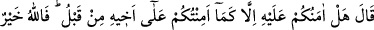
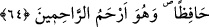

64. Yâkub “dedi ki: “Daha önce kardeşi (Yûsuf) hakkında size ne kadar
güvendiysem, bunun hakkında da size ancak o kadar güvenirim! Allah en hayırlı
koruyucudur. O, merhametlilerin en merhametlisidir.
Yâkub “dedi ki: “Daha önce kardeşi” Yûsuf “hakkında size ne kadar güvendiysem,
bunun hakkında da size ancak o kadar güvenirim!” Yani size güvenemem. Yûsuf
hakkında da çok şeyler söylemiş, fakat sonra yapacağınızı yapmıştınız. Dolayısıyla ne
size ne de sizin korumanıza güvenirim! Meseleyi sadece Allah Teâlâ’ya havâle ederim.
Çünkü “Allah en hayırlı koruyucudur.” O, benden de sizden de daha iyi korur. “O”
hem yeryüzündeki hem de gökyüzündeki “merhametlilerin en merhametlisidir.” Bu
özelliği sayesindedir ki Bünyamin’i koruyarak bana merhamet edeceğini ve başıma aynı
anda iki musibet vermeyeceğini umuyorum.
Bu ifade Yâkub (a.s.)’ın bir maslahat olduğu görüşüne vararak Bünyamin’i
götürmelerine izin verme eğiliminde olduğunu gösteriyor.
Ka‘b der ki: Yâkub (a.s.) “Allah en hayırlı koruyucudur.” deyince Allah Teâlâ şöyle
buyurdu: “İzzetim hakkı için sen bana tevekkül ettikten sonra iki oğlunu da sana geri
vereceğim!”
Şu halde Allah’a tevekkül etmek, başkalarının korumasına değil sadece Allah’ın
korumasına güvenmek gerekir. Çünkü O’nun dışındaki varlıklar bir şeyi korumak için
sebeplere ve vâsıtalara muhtaçtır. Allah Teâlâ ise zâtı itibâriyle ihtiyaçsızdır, hiçbir
konu ve hiçbir durumda vâsıtaya muhtaç değildir. Bu sebeple de Yûsuf (a.s.)’ı ve
Danyal (a.s.)’ı kuyuda iken korumuştur.
Buhtunnasr, Danyal (a.s.)’ı kuyuya attırdı, üzerine de iki aslan bıraktırdı. Fakat
aslanlar ona zarar vermedi, onu yalamaya ve ona sürünmeye başladılar. Ona bir elçi
gelip:
–“Ey Danyal!” deyince
–“Sen de kimsin?” diye sordu.
Elçi:
–“Ben Rabbinin elçisiyim. Benimle sana yiyecek gönderdi.” deyince Danyal (a.s.):
–“Kendisini zikredeni unutmayan Allah’a hamdolsun!” dedi.
Yine Allah Teâlâ’nın örneklerinden birisi de İbn Abbas (r. anhümâ)’dan rivâyet
edilen şu hâdisedir:
Rasûlullah (s.a.) hâcetini gidermek istediği zaman uzaklaşırdı. Bir gün yine bir ağacın
altına gitti. Ayakkabılarını çıkardı. Daha sonra ayakkabılarından birini giydi. Tam
öbürünü de giyecekken bir kuş gelip onu alıp götürdü. Onunla havada bir daire çizdi.
Ayakkabının içinden kapkara bir yılan aşağıya düştü. Bunun üzerine Nebî (a.s.) şöyle